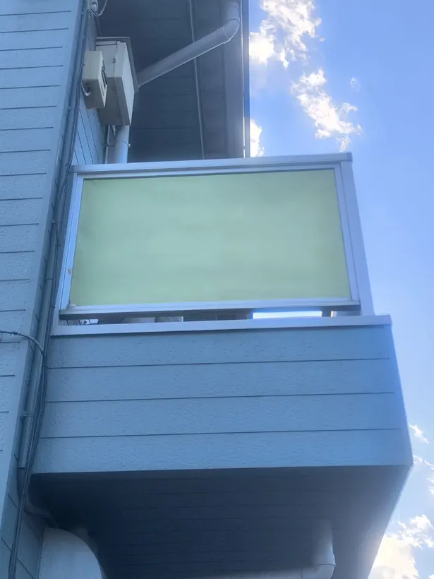
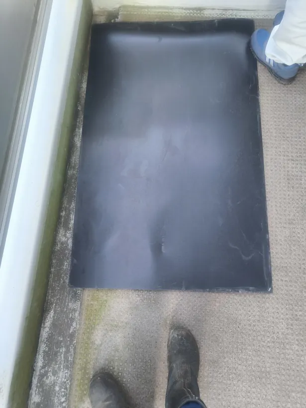
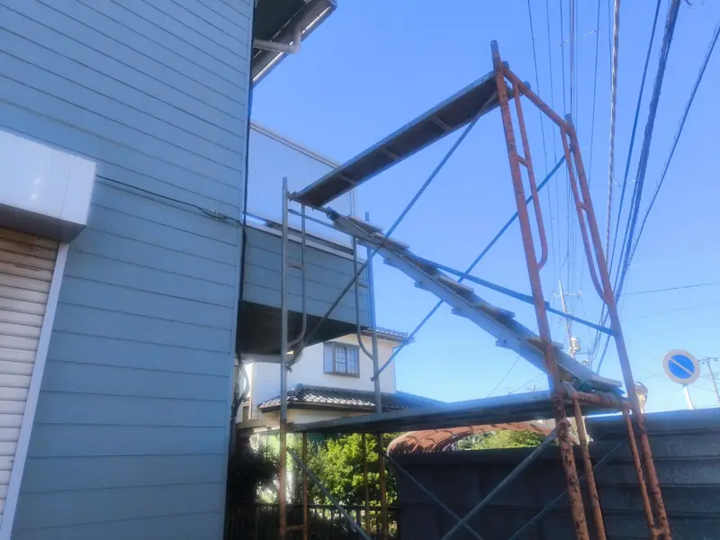
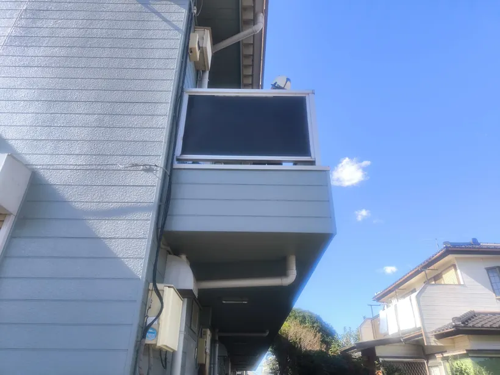
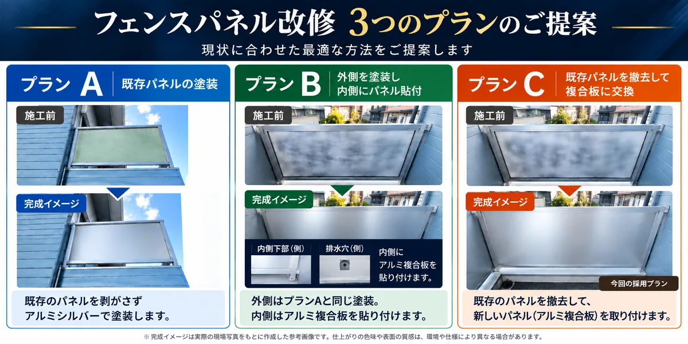
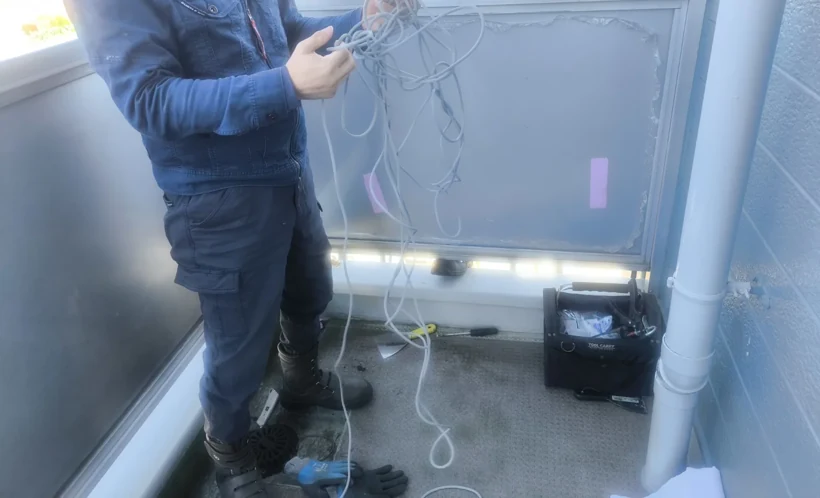
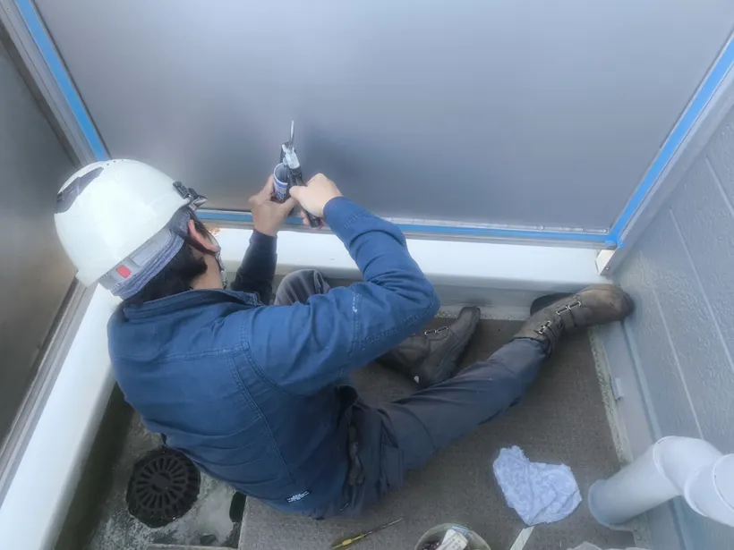
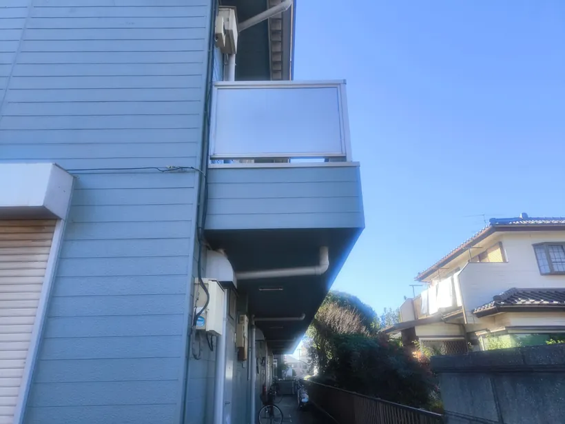
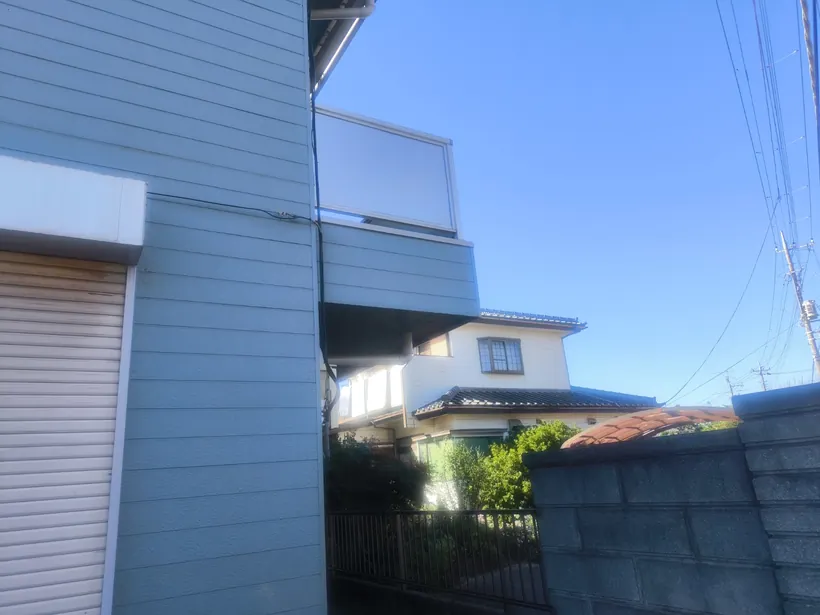

プランA｜塗装
既存パネルを残して塗装する方法。
WORKS / FENCE RENOVATION
応急の仮復旧から3つの改修方法をご提案。既存の枠を活かし、アルミ複合板への交換まで対応しました。
千葉県某所 ／ 2026年10月
 写真を大きく見る ↗
写真を大きく見る ↗破損状態を確認し、段階ごとに必要な作業を進めた施工事例です。
PROJECT OVERVIEW
強風による破損についてご連絡をいただき、現地確認と仮復旧を行いました。後日、3つの改修案をご提案し、ご依頼いただいた工法でパネルを交換しました。
01 / FIRST RESPONSE
「フェンスパネルの外側が風で飛び、黒い板がぶら下がっている」とのご連絡を受けました。現地に到着した際には、黒い樹脂板もすでに落下し、回収されていました。まずは既存フレームと部材の状態を確認しました。

写真を大きく見る ↗
写真を大きく見る ↗02 / TEMPORARY REPAIR
高所での作業のため足場を組み、回収された黒い樹脂板を既存のパッキンで再固定しました。仮復旧の後に台風が来ましたが、その際にも固定した板は持ちこたえました。
この黒い板はあくまで仮復旧の状態であり、本工事の完成仕上げではありません。

写真を大きく見る ↗
写真を大きく見る ↗03 / OPTIONS & PROPOSAL
仮復旧後、既存パネルの扱い方が異なる3つの工事案を、完成イメージ付きの比較資料でご提案しました。他社2社からも見積もりが出ていたなか、最終的に当社へご依頼いただき、プランCを採用しました。
既存パネルを残して塗装する方法。
外側を塗装し、内側にアルミ複合板を貼り付ける方法。
既存パネルを撤去し、アルミ複合板に交換する方法。

04 / ACTUAL CONSTRUCTION
本施工では、既存のコーキングを切ることで縦桟を取り外せる構造を確認し、パネルを撤去しました。アルインコ製のアルミ複合板（厚さ3mm）を取り付ける際には、既存のパッキンを加工して再利用。最後にコーキングを打ち直して仕上げました。

写真を大きく見る ↗
写真を大きく見る ↗05 / COMPLETION
本施工は当日10時30分に開始し、13時に終了しました。仕上がりは実際の完成写真でご確認いただけます。

写真を大きく見る ↗
写真を大きく見る ↗フェンスや建物の一部分が破損した際も、既存の状態・材料・施工条件を確認し、対応方法を検討します。お困りの箇所や希望の仕上げがあれば、お聞かせください。
フェンス・補修工事について相談する